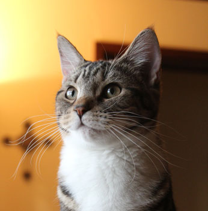
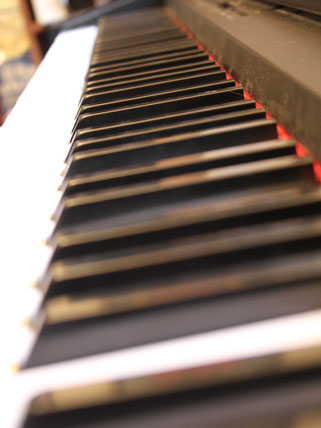
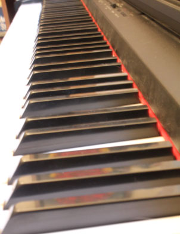
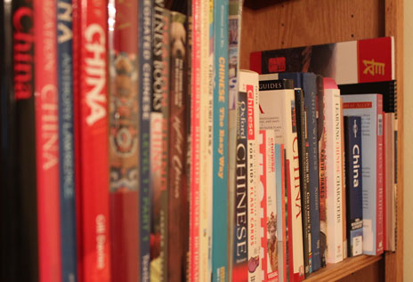
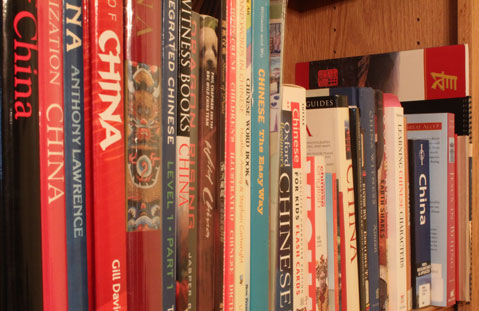
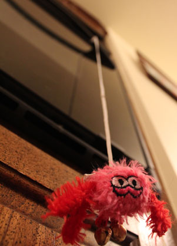
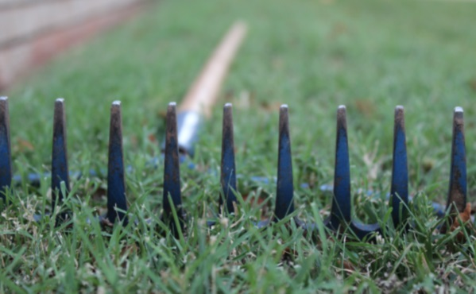
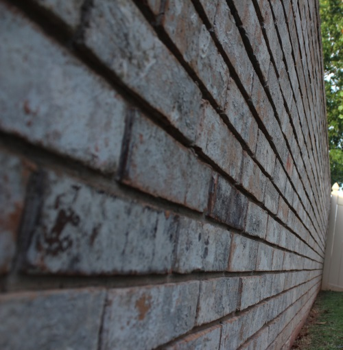

June 21, 2013
| This week's class was about
F-Stops/Aperture/Depth of Field. It's about bringing attention to
your subject using focus. It is an important aspect of
photography. Unfortunately, I was not able to make this week's
homework as interesting as last
week's shutter speed assignment. I think I'm starting to get
the basic concept, I just couldn't think of any really jazzy ideas for
using it. The first technique I show is using a telephoto lens to give me a shallow depth of field. That means the background behind my subject will be blurry. |
|
|
 |
|
| I was blessed to visit my family this weekend, so I followed cute Brodie
around everywhere with my camera. He probably thinks that strange black thing (my camera) is attached to me! |
At home Lily is my very willing photography model. |
|
The next pictures show how a low F-Stop will have only part of the picture in focus, while a high F-Stop will allow almost the whole picture to be in focus. |
|
 |
 |
| Low F-Stop | High F-Stop |
|
Same trick, different subject. |
|
 |
 |
| Here's another telephoto depth of field shot I took recently. |
If you ever need a photographer to capture those scraggly cat toys you have around the house, I'm your gal! |
|
|
 |
|
Here I try to get artistic with a rock rake. And by the way, don't
try this at home. 
Even a brick wall is no match for my artistic-ness! |
|
|  |
|